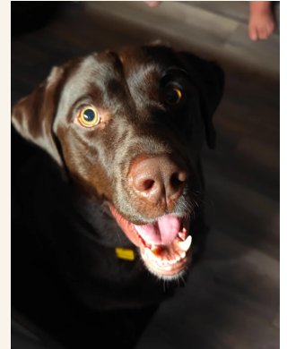

Just off Interstate 43 in beautiful Manitowoc, Wisconsin. Open arms. Open paws.
| Monday | 5:00 AM – 9:00 PM |
| Tuesday | 5:00 AM – 9:00 PM |
| Wednesday | 5:00 AM – 9:00 PM |
| Thursday | 5:00 AM – 9:00 PM |
| Friday | 5:00 AM – 9:00 PM |
| Saturday | 5:30 AM – 9:00 PM |
| Sunday | 5:30 AM – 9:00 PM |
Whether you're racing to work or settling in for an afternoon with your favorite pup, here's how to make the most of your visit.
Two lanes mean shorter waits. Quick snack or refreshing drink — without rustling the little ones from their back-seat slumbers.
Need to stretch the legs and get the zoomies out? Park up and enjoy our fenced-in dog run. While the doggos play, you sip.
Seasonal walk-up window open March through November. Perfect for soaking up some Wisconsin weather.
Plenty of outdoor seating to relax with friends, family, and four-legged best friends.
Free Cappoochinos and all-natural doggy treats for your favorite furry friend, every visit, no charge.
Skip the wait — order ahead through our Toast online ordering system and pick up at the drive-thru.

We sit on the edge of Manitowoc, easy on, easy off. Coming from I-43, take exit 149 (US-151 / WI-42) and you'll find us right between Menards and the Holiday Inn.
From Green Bay: about 35 minutes south on I-43.
From Sheboygan: about 30 minutes north on I-43.
From downtown Manitowoc: about 5 minutes west.
Plenty of free parking, two drive-thru lanes, and a fenced dog park out back. Can't miss us — look for the brown lab on the sign.

Every week we feature a different "Top Dog" — Coffee Lab regulars who keep our days sunny. Want your pup featured? Stop by, snap a photo at the drive-thru or in the dog park, and tag us on Instagram or Facebook with #CoffeeLabBestFriend.
Don't forget — every doggo gets a free Cappoochino (whipped cream in a pup, for the pup) and an all-natural doggy treat on the house.
See This Week's Top DogSkip the wait. Order ahead through Toast and pick up in the drive-thru.
Start an Order →The perfect treat for the dog-loving caffeine fiend in your life.
Send a Gift Card →